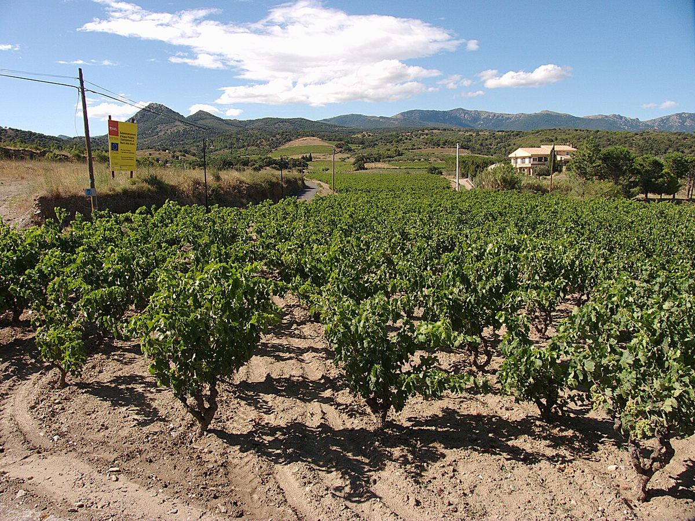

RED
Empordà is the designation of origin of north-eastern Catalonia, in the province of Girona, between the Pyrenees and the Mediterranean. Shaped by the tramontana wind, it produces Carignan and Grenache reds, whites and the traditional sweet wine Garnatxa de l'Empordà.

Empordà is one of the oldest wine-growing areas on the Iberian Peninsula. The Greeks founded the colony of Emporion, today's Empúries, on its coast in the sixth century BC and helped spread vine growing, which continued in Roman times. In the Middle Ages monasteries, such as the Benedictine monastery of Sant Pere de Rodes in the Rodes range above Cap de Creus, developed vineyards on terraces stepping down towards the sea. Phylloxera, at the end of the nineteenth century, led to the abandonment of many of those terraces, whose dry-stone walls can still be seen in the landscape. In the twentieth century cooperatives played a prominent role, and in recent decades many small and medium-sized wineries have renewed the area's image.
The designation covers Alt Empordà and Baix Empordà, in the province of Girona, between the Albera range on the French border and the Mediterranean coast. The climate is Mediterranean, with mild winters and warm summers, but it is strongly marked by the tramontana, a cold, dry northerly wind that blows with great force. The tramontana dries the air, reduces the risk of disease and concentrates the grapes, although it can also damage the vines. The proximity of the sea moderates temperatures. Within the designation, Alt Empordà in the north is the area most exposed to the tramontana, while Baix Empordà in the south is somewhat more sheltered and has gentler relief.
Soils are varied: granitic and sandy, known locally as sauló, in the Albera and other areas; slate around Cap de Creus; and calcareous and alluvial soils on the plains.
The traditional varieties are Carignan, known locally as Samsó, and Grenache in its red, pink and white forms, together with Macabeo and Muscat of Alexandria. Cabernet Sauvignon, Merlot, Syrah, Tempranillo and Chardonnay are also grown, among others. Producers make reds, often blending local and international varieties, as well as whites and rosés.
Garnatxa de l'Empordà is a traditional naturally sweet wine made from Grenache, often the pink variant, and sometimes aged for years in contact with air, which gives it notes of dried fruit and nuts and an unctuous texture. Moscatel de l'Empordà is another traditional sweet wine from the area. Both are part of the historical identity of Empordà wine.